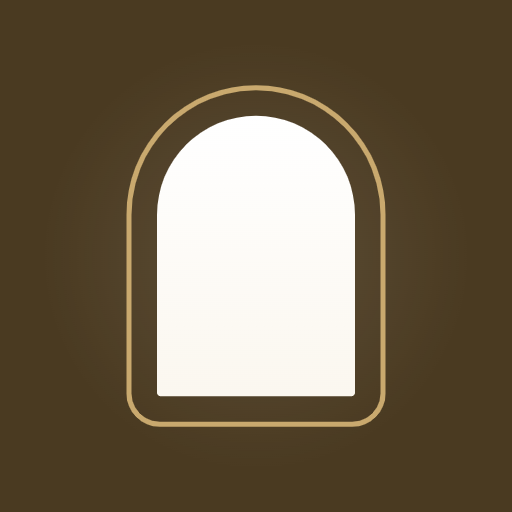

بصيرة - من القرآن
لكل ما في قلبك آية
رفيقٌ هادئ لتأمّل القرآن الكريم: اكتب ما يخبرك به قلبك، فتنفتح لك آيةٌ كاملة، ومناجاةٌ لله، وخطوةٌ طيبة ليومك.
- بلا حساب
- بلا إعلانات
- بلا تتبّع
- يعمل دون اتصال
ٱلَّذِينَ ءَامَنُوا۠ وَتَطْمَئِنُّ قُلُوبُهُم بِذِكْرِ ٱللَّهِۗ أَلَا بِذِكْرِ ٱللَّهِ تَطْمَئِنُّ ٱلْقُلُوبُ ٢٨
ما الذي تجده في بصيرة؟
المحراب كل فجر
«رسالة المحراب» تتجدّد كل يوم عند الفجر: آيةٌ، ومناجاةٌ تتجلّى فيها، ونورٌ تمشي به يومك.
النور: آيةٌ ومناجاةٌ لكل شعور
اكتب ما تشعر به بكلماتك، أو اختر من مئات المواضيع، فتنفتح لك «شجرة نور»، واتبع كلماتها المضاءة لتمضي في التأمّل.
المصحف كاملًا بخط مصحف المدينة
القرآن الكريم برواية حفص، بخط مجمع الملك فهد، مع فهرس السور والأجزاء وحفظ موضع القراءة.
رحلة القرآن
قصص القرآن بآياته وحدها، مجموعةً قصةً قصة، من بدء الخلق إلى دار القرار.
مكتبة الأدعية
النصوص الكاملة للصحيفة السجادية والمناجاة الخمس عشرة ودعاء كميل وأبي حمزة الثمالي وعرفة والجوشن الكبير.
ابدأ الآن
على الآيفون من App Store، أو مباشرةً في متصفح هاتفك.
Baseera
An Ayah for what your heart holds
A calm companion for reflecting on the Quran. Tell it what your heart is carrying, and a complete Ayah opens, with a supplication to Allah and one good step for today.
- No account
- No ads
- No tracking
- Works offline
ٱلَّذِينَ ءَامَنُوا۠ وَتَطْمَئِنُّ قُلُوبُهُم بِذِكْرِ ٱللَّهِۗ أَلَا بِذِكْرِ ٱللَّهِ تَطْمَئِنُّ ٱلْقُلُوبُ ٢٨
Inside Baseera
The Mihrab, every dawn
A new message at Fajr each day: an Ayah, a supplication that echoes it, and a light to walk by.
Light: an Ayah for every feeling
Type how you feel, or choose from hundreds of topics, and a Tree of Light opens. Follow its lit words to keep reflecting.
The full Mushaf in the Madinah script
The Quran in the narration of Hafs, in the King Fahd Complex script, with a surah and juz index and your reading place.
The Quran Journey
The stories of the Quran told by its own Ayat, story by story, from the beginning of creation to the final abode.
The library of supplications
The full texts of al-Sahifa al-Sajjadiyya, the Fifteen Whispered Prayers, Kumayl, Abu Hamza, ʿArafah and al-Jawshan al-Kabir.
Start now
On iPhone from the App Store, or right in your phone's browser.